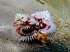

serpulidae

Definition: The Serpulidae are a family of sessile, tube-building annelid worms in the class Polychaeta. The members of this family differ from other sabellid tube worms in that they have a specialized operculum that blocks the entrance of their tubes when they withdraw into the tubes. In addition, serpulids secrete tubes of calcium carbonate. Serpulids are the most important biomineralizers among annelids. About 300 species in the family Serpulidae are known, all but one of which live in saline waters. The earliest serpulids are known from the Permian (Wordian to late Permian).The blood of most species of serpulid and sabellid worms contains the oxygen-binding pigment chlorocruorin. This is used to transport oxygen to the tissues. It has an affinity for carbon monoxide which is 570 times as strong as that of the haemoglobin found in human blood.Empty serpulid shells can sometimes be confused with the shells of a family of marine gastropod mollusks, the Vermetidae or worm snails. The most obvious difference is that serpulid shells are dull inside, whereas the molluscan vermetid shells are shiny inside.
Source: Wikipedia
Wikipedia Page (Something wrong with this association? Let us know.)
Wikidata Page (Something wrong with this association? Let us know.)